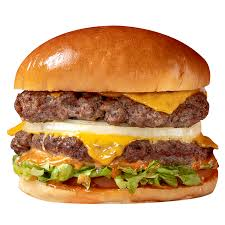

Hi, my name is Taehyun Kim.
I work on the behavioral side of large language models — the failure modes, the tone shifts, the moments where output diverges from what the setup predicts.
Background
I'm an undergraduate researcher at LILAB, Korea University, working toward publication at ACL, EMNLP, NeurIPS, and AAAI. Before my current direction I worked on synthetic data pipelines and vision-LLM fine-tuning, which is where [ICSE Paper Title] came from.
Most of my research starts from an observation rather than a research question. I run small pilots, look for results that don't match the expected pattern, and build the question backwards from there. What I'm looking for in a topic is a real opening — something where the observation itself is surprising, not just the mitigation.

Current work
[Project Title]
One or two sentences on what you're observing and why it's worth chasing.
Pilot running[Project Title]
One or two sentences on what you're observing and why it's worth chasing.
ExploratoryWhere I've worked
Undergraduate Researcher
- Designing and running pilot experiments on LLM behavioral phenomena
- [Add a concrete result or method here]
Undergraduate Researcher
- Built synthetic data pipelines for [purpose]
- Fine-tuned vision-language models for [task]